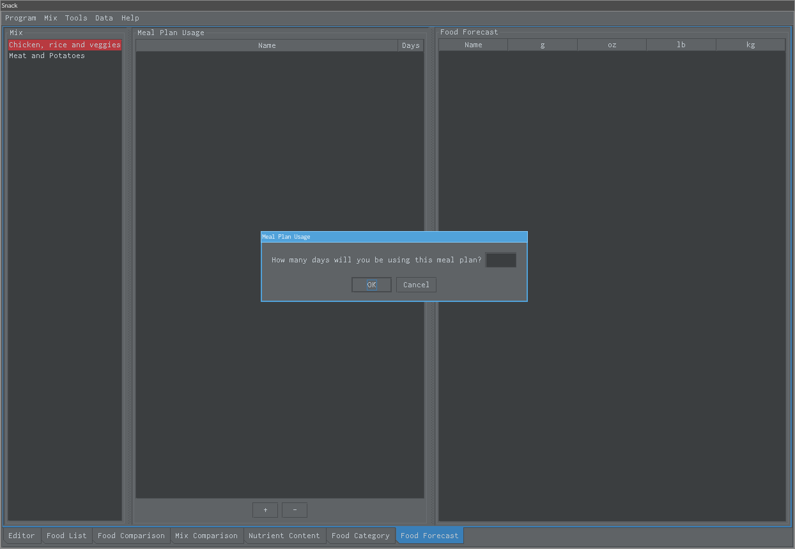
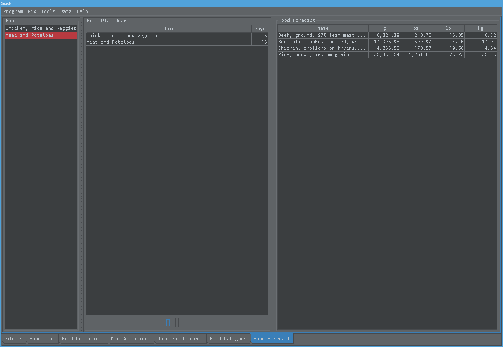

Food Forecast¶
User would like to know how much food he or she would need to buy.

The first step is to select a meal plan and enter the number of days that user will be eating that meal plan. Repeat previous step using a different meal plan if necessary.¶

The last step is to verify the results. The report says that user needs to buy those food quantities to be able to follow those meal plans through the next thirty days.¶